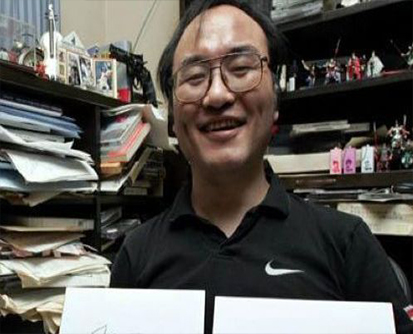

青山刚昌简介
青山刚昌，1963年6月21日出生于日本鸟取县，血型为B型。日本漫画家。
青山刚昌出生于1963年，家族经营着小镇上的汽车修理厂和加油站。他从小就特别喜欢侦探推理小说，常常和家中兄弟组成少年侦探队，在附近探险。他还是个漫画迷，小学毕业作文写的就是"我想画私人侦探的漫画"。但是父母觉得"漫画这种东西看了也成不了有出息的人"，希望他做一名正经的美术老师，一直严禁他接触漫画。因此在初高中时代，青山刚昌只能都偷偷窝在被子里打手电看漫画。1986年，青山刚昌考入日本大学艺术学院美术系。刚到大学，他就摆脱了父母的束缚，大胆地加入了社团"热血漫画斗志会"。当时，他还在校友、著名漫画家阿部丰的工作室当助手。一天，阿部丰问他说："你天分不错，不想真正地画漫画吗？"这成了青山刚昌走上漫画之路的契机。
投稿之初，青山刚昌选择投稿至《周刊少年Magazine》杂志。但由于当时的杂志主编不看好他的画风而作罢。紧接着青山刚昌联系了《周刊少年Sunday》编辑部，其作品得到了负责人的赏识。

1986年，青山刚昌在《周刊少年Sunday》刊登漫画《约定》，作为漫画家出道。
1987年，《魔术快斗》开始连载。
1988年，《城市风云儿》开始连载。
1993年，青山刚昌凭借作品《城市风云儿》获得小学馆漫画奖，成为备受期待的漫画作家。同年，青山刚昌花了两个星期构思柯南的故事和形象，把阿瑟·柯南·道尔的《福尔摩斯探案全集》拿出来反复研究，还因此给主角起名为"柯南"。1994年1月，青山刚昌创作出了《名侦探柯南》漫画第一期，刊登在漫画杂志《周刊少年Sunday》上。
2003年，漫画《名侦探柯南》发行总量突破1亿册。
2007年3月18日，青山刚昌故乡馆开馆。同年，在《周刊少年Sunday》上发表单回漫画《对我说谎》。
2011年1月1日，在当天播出的电视剧《相棒》元旦特别篇中登场并饰演鉴识人员。
2012年，在《周刊少年Sunday》上连载由其本人原创、秋元康担任原案、梧桐柾木作画的侦探漫画《AKB48杀人事件》。
2015年3月，青山刚昌因病住院，其作品更改为不定期连载 [12] ；同年7月22日，连载恢复。
2017年，青山刚昌创作的漫画在全世界的发行量突破2亿册。同年10月18日，出版纪念自己以画家出道30周年的书籍《青山刚昌 30周年书》。12月，因身体原因，宣布其作品《名侦探柯南》进入"长期休载"。2018年4月11日，该作品重启连载。